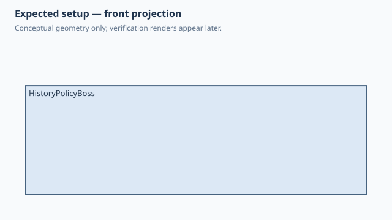

Forge qualification case
Native versus sketch history policy
1. Test setup

Test goal
Verify that History/behavior policy changes persisted SolidCraft feature history rather than only changing Python-side implementation details.
Pass criteria
SolidCraft 0.30.1 builds one plate body with three bosses (AUTO, NATIVE and SKETCH) plus the explicit circular pad, while the saved timeline preserves both native BossFeatures and the forced-sketch feature chain.
2. Implementation under test
Fixture source
class HistoryPolicyBoss:
size = 50.0
def build(self):
body = Box(self.size, self.size, 6.0)
automatic = Boss(d=12.0, h=10.0, hole_d=4.0).attach(
body,
parent=Anchor.TOP,
offset=(X.MIN + 15.0, Y.CENTER),
)
body = body + automatic
with behavior(history=History.NATIVE):
native = Boss(d=12.0, h=10.0, hole_d=4.0).attach(
body,
parent=Anchor.TOP,
offset=(X.CENTER, Y.MAX - 10.0),
)
body = body + native
with behavior(history=History.SKETCH):
sketched = Boss(d=12.0, h=10.0, hole_d=4.0).attach(
body,
parent=Anchor.TOP,
offset=(X.MAX - 15.0, Y.CENTER),
)
body = body + sketched
with Sketch(name="Explicit pad", on=body, parent=Anchor.TOP) as sketch:
sketch.add(Circle2D(d=10.0), offset=(0.0, -15.0))
explicit = sketch.extrude(6.0)
body + explicit
HistoryPolicyBoss()
Public Forge API used
Boss(...).attach(...); with behavior(history=History.SKETCH); explicit Sketch(...).add(Circle2D(...)).extrude(...)
Forge model represented by this fixture
One plate receives the same Boss intent three times: AUTO and explicit NATIVE lower as native plastic features, while SKETCH lowers through editable sketch/extrude/cut history; a separately named explicit sketch adds a circular pad.
3. Generated SolidCraft relationship
AUTO and History.NATIVE each emit plastic.boss. History.SKETCH emits a Boss sketch plus join extrusion and a Boss-hole sketch plus cut extrusion. The explicit named Sketch remains a distinct sketch and join extrusion.
Show generated relationship / command details
parameters.add
solid.box
plastic.boss
plastic.boss
sketch.create
sketch.circle.center
sketch.finish
solid.extrude
sketch.create
sketch.circle.center
sketch.finish
solid.extrude
sketch.create
sketch.circle.center
sketch.finish
solid.extrude3. Results
6. Evidence and references
Raw evidence
Show generated files and measurements
Reference models
These comparisons clarify concepts; Forge does not promise API compatibility with them.
- SolidCraft: The native timeline is the source of truth for whether feature history remains inspectable after Python compilation.
- PythonSCAD: The Python context manager selects compilation policy while geometry remains expressed with ordinary Python objects.